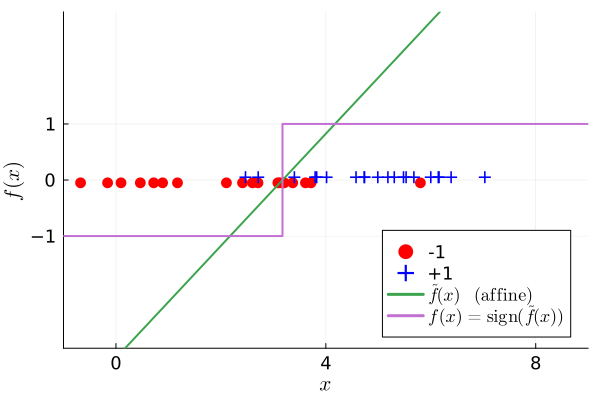
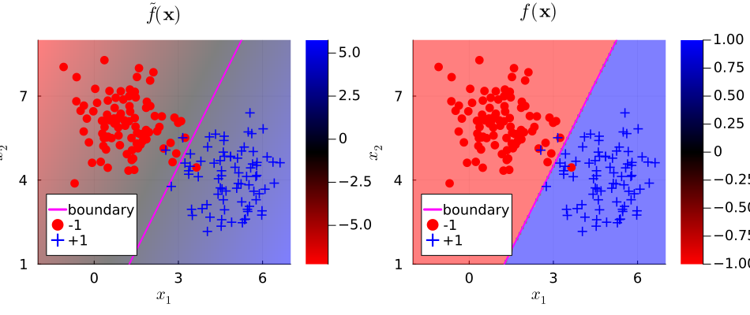

Decision boundaries
Illustrate decision boundaries for binary classification in Julia.
This page comes from a single Julia file: decision-boundary.jl.
You can access the source code for such Julia documentation using the 'Edit on GitHub' link in the top right. You can view the corresponding notebook in nbviewer here: decision-boundary.ipynb, or open it in binder here: decision-boundary.ipynb.
Setup
Add the Julia packages used in this demo. Change false to true in the following code block if you are using any of the following packages for the first time.
if false
import Pkg
Pkg.add([
"InteractiveUtils"
"LaTeXStrings"
"MIRTjim"
"Plots"
"Random"
"Statistics"
])
endTell Julia to use the following packages. Run Pkg.add() in the preceding code block first, if needed.
using InteractiveUtils: versioninfo
using LaTeXStrings
using MIRTjim: jim, prompt
using Plots: default, gui, savefig, RGB, cgrad
using Plots: histogram!, plot, plot!, scatter, scatter!
using Random: seed!
using Statistics: mean
default(); default(markersize=6, linewidth=2, markerstrokecolor=:auto, label="",
markerstrokewidth = 2,
tickfontsize=12, labelfontsize=14, legendfontsize=12, titlefontsize=16)The following line is helpful when running this file as a script; this way it will prompt user to hit a key after each figure is displayed.
isinteractive() ? prompt(:prompt) : prompt(:draw);1D case
seed!(4)
n1 = 20
n2 = 21
n = n1 + n2
X = [2 .+ 1.5 * randn(n1); 6 .+ 1.5 * randn(n2)]
y = [fill(-1, n1); fill(+1, n2)]
X1 = X[y .== +1]
X2 = X[y .== -1]
dmu = mean(X1) - mean(X2)
p1 = plot(
xaxis = (L"x", (-1, 9), 0:4:8),
yaxis = (L"f(x)", (-3, 3), -1:1),
legend = :bottomright,
)
scatter!(X2, 0*X2 .- 0.05, label="-1", marker=:circle, alpha=1, color=:red)
scatter!(X1, 0*X1 .+ 0.05, label="+1", marker=:+, color=:blue)
x = [-1, dmu-10eps(), dmu+10eps(), 9]
w = 1
b = -dmu
ftil(x) = w * x + b
f(x) = sign(ftil(x))
plot!(x, ftil.(x), label=L"\tilde{f}(x)\quad \mathrm{(affine)}")
plot!(x, f.(x), label=L"f(x) = \mathrm{sign}(\tilde{f}(x))")
# savefig(p1, "decision1.pdf")
prompt()2D case
Generate synthetic data from two classes
if !@isdefined(v1) || true
seed!(0)
n0 = 90
n1 = 80
mu0 = [1, 6]
mu1 = [5, 4]
v0 = mu0 .+ 1*randn(2,n0) # class -1
v1 = mu1 .+ 1*randn(2,n1) # class 1
nex = 0
v0 = [v0; ones(1,n0)] # (3, n0) training data - with intercept
v1 = [v1; ones(1,n1)] # (3, n1) training data - with intercept
end;Color map for discriminant function
RGB255(args...) = RGB((args ./ 255)...)
color = cgrad([RGB255(255, 0, 0), :black, RGB255(0, 0, 255)]);
x1 = range(-2, 7, 91)
x2 = range(1, 9, 81);Scatter plot and decision boundary
function fplot(ff::Matrix, title::AbstractString)
v1p = range(-2, 7, 3)
ps = jim(x1, x2, ff; title,
color, alpha = 0.5, yflip = false,
xaxis = (L"x_1", (-2, 7), 0:3:6),
yaxis = (L"x_2", (1, 9), 1:3:8),
size = (550, 500), legend = :bottomleft,
colorbar_ticks = -1:1,
)
plot!(v1p, 2*v1p .- 1.5, color=:magenta, label="boundary")
scatter!(v0[1,:], v0[2,:]; color = :red, label="-1")
scatter!(v1[1,:], v1[2,:]; color = :blue, label="+1", marker = :+)
end
ftil2 = x1 .- 0.5*x2' .- 0.75 # w'x + b
ffun2 = sign.(ftil2)
p2ftil = fplot(ftil2, L"\tilde{f}(\mathbf{x})")
p2ffun = fplot(ffun2, L"f(\mathbf{x})")
p2 = plot(p2ftil, p2ffun, size=(950,400))
Either $f(x)$ or $\tilde{f}(x)$ is called the discriminant function, depending on the literature.
# savefig(p2, "decision2.pdf")This page was generated using Literate.jl.